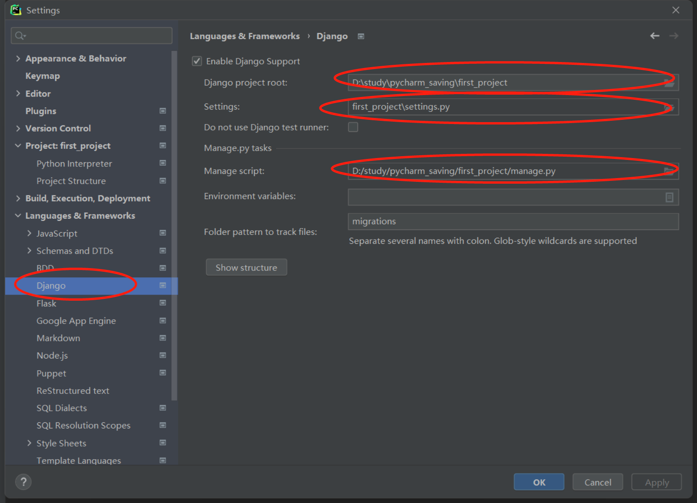

环境配置
- python 3.7以上
- env 虚拟环境
django有很多app，如果没有虚拟环境，其中有像contrib下的migrations(配置数据迁移)就全部会装在django的模块下面，如果其它项目也使用django，那么就会被共享，进而数据迁移出现问题。
1 安装python注意事项
1.1 windows
windows11下配置path为PYTHON_HOME无法成功，因为有个系统的path：%USERPROFILE%\AppData\Local\Microsoft\WindowsApps优先级很高，cmd输入python会打开microsoft store
因此在windows11可以用py命令代替python命令。
1.2 linux&mac
使用python3命令即可。
2 创建项目
用windows演示，linux用python3代替py
2.1 创建虚拟环境并创建项目
找到项目想要存储的目录下，输入：
D:\study\pycharm_saving>py -m venv venv
| |
| 当前目录下创建一个叫venv的目录
python虚拟环境的模块名字
D:\study\pycharm_saving>dir
2022/08/23 17:41 <DIR> venv
D:\study\pycharm_saving>dir venv\
2022/08/23 17:41 <DIR> Include
2022/08/23 17:41 <DIR> Lib
2022/08/23 17:41 84 pyvenv.cfg
2022/08/23 17:41 <DIR> Scripts
D:\study\pycharm_saving>.\venv\Scripts\activate.bat
就进入了虚拟环境里：
(venv) D:\study\pycharm_saving>
可以先查看一下当前虚拟环境中装了哪些模块(pip放在venv\Scripts目录下)：
(venv) D:\study\pycharm_saving>pip list
Package Version
---------- -------
pip 22.2.1
setuptools 63.2.0
然后我们安装django，配置豆瓣的源安装快一点：
(venv) D:\study\pycharm_saving>pip install django -i https://pypi.douban.com/simple
然后在当前目录，真正创建项目目录first_project：
(venv) D:\study\pycharm_saving>django-admin startproject first_project
最后把当前目录下的venv目录放到项目first_project根目录下：
(venv) D:\study\pycharm_saving\first_project>dir
2022/08/23 18:05 <DIR> first_project //项目必要的配置文件
2022/08/23 18:05 691 manage.py //项目入口文件
2022/08/23 17:41 <DIR> venv
2.2 配置pycharm
按理来说，pycharm会自动配置好，以防万一还是检查一下：
Ⅰ python解释器，也就是python执行命令：
Ⅱ 移除venv目录，这个目录与项目实际开发的逻辑没有什么关系：
Ⅲ django项目配置

3 创建项目下的app
在上一小节，我们将venv移到了项目根目录下，会导致使用django-admin命令报错，因为这个命令中在之前创建虚拟环境时，将虚拟环境的python命令写成了绝对路径，因此一旦移动了venv目录，就会报找不到python命令。
所以此时如果想新建app，就必须得再把venv目录移回之前创建虚拟环境的目录，这里演示是在和项目同级的目录中，然后输入命令进入虚拟环境：
D:\study\pycharm_saving>.\venv\Scripts\activate.bat
我们再进入项目目录，创建app：
//按理来说可以直接输入django-admin，但不知道为什么不行了。。。
(venv) D:\study\pycharm_saving\first_project>..\venv\Scripts\django-admin.exe startapp first_app
查看项目根目录下的文件：
(venv) D:\study\pycharm_saving\first_project>dir
2022/08/23 19:47 <DIR> .idea
2022/08/23 19:39 <DIR> first_app
2022/08/23 18:28 <DIR> first_project
2022/08/23 18:05 691 manage.py
2022/08/23 18:28 <DIR> __pycache__
此时再将venv目录移到项目根目录中。
可能有人会嫌麻烦，就不想再移动venv目录了，不过因为我们的项目是基于这个虚拟环境的，很多的模块都是安装在这个虚拟环境中的，如果移动项目时忘记这个虚拟环境，就会导致项目无法运行，见仁见智吧...
4 项目结构
cmd输入：
>tree /f > 1.txt
first_project
│ manage.py
│
├─first_app
│ │ admin.py
│ │ apps.py
│ │ models.py
│ │ tests.py
│ │ views.py
│ │ __init__.py
│ │
│ └─migrations
│ __init__.py
│
├─first_project
│ │ asgi.py
│ │ settings.py // 全局配置文件
│ │ urls.py // 路由文件
│ │ wsgi.py
│ │ __init__.py
│ │
│ └─__pycache__
│ settings.cpython-310.pyc
│ __init__.cpython-310.pyc
│
├─venv
│ │ pyvenv.cfg
│ │
│ ├─Include
│ ├─Lib
│ │
│ └─Scripts
│ activate
│ activate.bat
│ Activate.ps1
│ deactivate.bat
│ django-admin.exe
│ pip.exe
│ pip3.10.exe
│ pip3.exe
│ python.exe
│ pythonw.exe
│ sqlformat.exe
│
└─__pycache__
manage.cpython-310.pyc
5 django约定
各app之间互相独立，不要互相import。